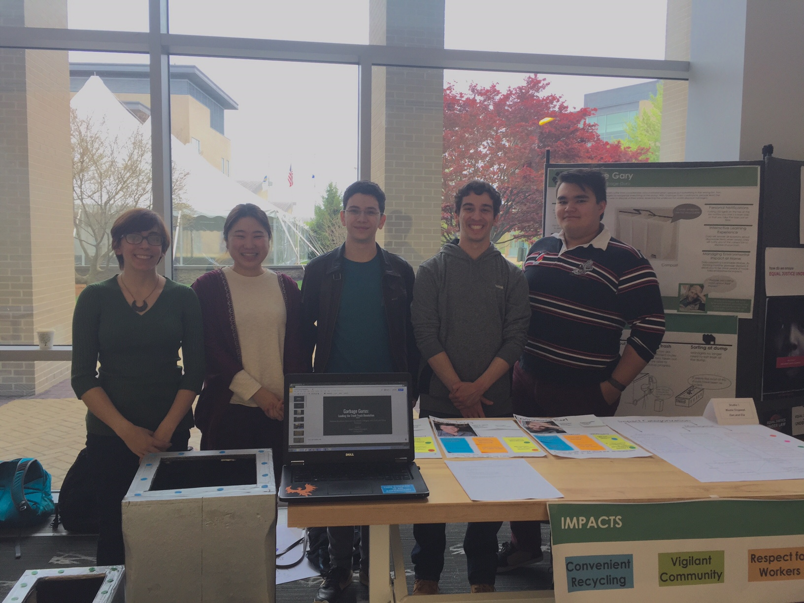
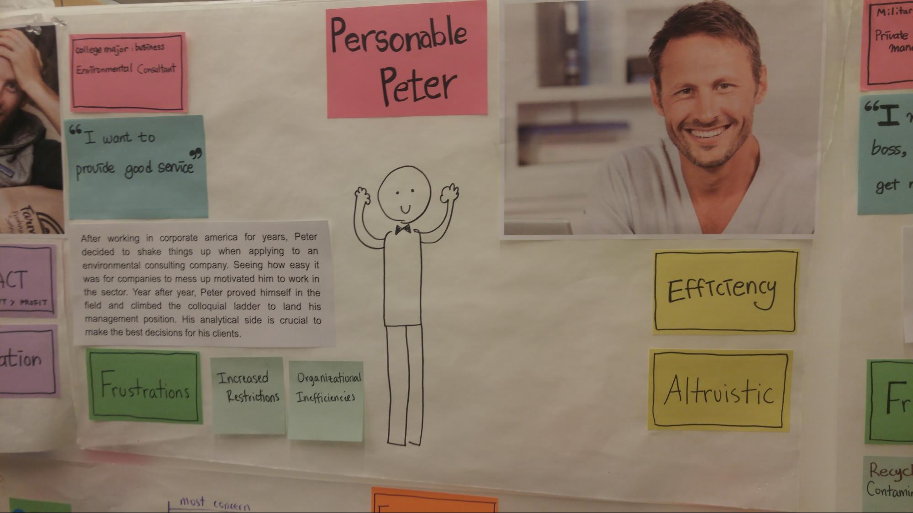
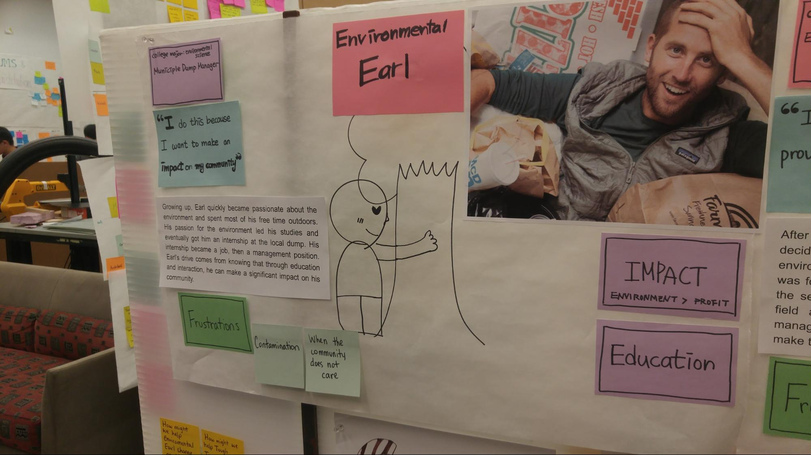

User Oriented Collaborative Design with Waste Disposal Managers
User Oriented Collaborative Design (known as UOCD), is a class at Olin I took in the Spring of 2017. Our team was tasked with designing a product for waste disposal managers with interviews, co-designs, and a lot of post-it notes. The project culminated with a final design review and a walkaround poster session. What’s important to me in this project isn’t so much the final result, but the process that led there. Along the way, I learned how to conduct user interviews, make personas, use them to synthesize and ideate, co-design solutions with potential users, but perhaps more importantly I learned the value of every one of those steps.

We started by learning as much as we could about the waste management industry. In addition to internet research, we talked to people ranging from the owner of a small garbage truck business to a nearby recycling plant’s manager, including an employee of a private hazardous waste disposal company. Each interview had two or more people from the team (one leading the interview, others taking notes and helping keep track of the conversation). Later, we presented what we learned to the rest of the team both to keep everyone updated, but also to help recall and synthesize what we learned.
After gathering what felt like enough information about our users, we eventually synthesized everything to create three personas. We did this using a few different frameworks, such as OCEAN maps (rating and comparing users on five axes: Openness to change, Conscientiousness, Extraversion, Agreeableness, Neuroticism), Venn diagrams, two by twos, sorting direct quotes, and many more. This allowed us to distill our user’s needs and desires to build personas that could properly represent them.


With those personas in mind, got a better understanding of what a “perfect world” might look like for our users. This helped us generate ideas that would actually help our users. We judged our ideas based on our main impacts, and tried to modify them to maximize impact across the board.
We eventually settled on a single idea: what if your garbage can could help you identify what can be recycled, and what doesn’t? We defined and refined this idea through co-designs with users we had previously interviewed. We settled on Gary, a voice-assisted bin which answer questions about what can be recycled and reminds the user when the bins should be put outside. The idea is to make recycling more active by making the experience interactive.

Finally, we defended our design during poster a poster session and a design review. This relied on describing our personas, explaining the impact areas we had identified, and clearly communicating where the final design came from.
Like I said above, to me the value of this project is less the final output and more going through the entire design process once. It wasn’t until we tried to make personas that I fully understood how to best conduct an interview. It wasn’t until we ideated that I properly grasped how useful personas can be. It wasn’t until we evaluated our ideas that I really figured out what to aim for during ideation. So I stumbled through the process in this class, but came out confident in my ability to effectively run through this process next time.